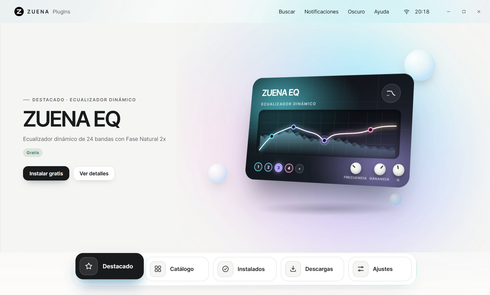

Acceso anticipado · Gratis · Windows
Plugins de audio, listos en tu DAW.
Elegís un plugin, se descarga verificado y queda instalado en la carpeta VST3. Sin cuenta, sin registro y sin pagar.
Por ahora el launcher es solo para Windows. Podés descargarlo igual y abrirlo en una PC con Windows.

Plugins gratis, hechos con cuidado. Se descargan verificados, se instalan solos y te avisan cuando hay algo nuevo. Sin cuenta. Sin vueltas.
Acceso anticipado
Estás entrando temprano.
ZUENA Plugins está en acceso anticipado: ya podés usarlo en tus sesiones, mientras sigue creciendo versión a versión.
Qué ya funciona
El launcher, la instalación verificada, las actualizaciones automáticas, ZUENA EQ, ZUENA Luma y ZUENA Link.
Qué puede cambiar
Controles, sonidos de fábrica y funciones. Puede haber errores: guardá copias de tus sesiones.
Qué viene
Más plugins, como VoxTransit, y la interfaz en inglés. Te enterás desde el propio launcher.
Si algo falla, avisale al autor en GitHub.
Cómo funciona
Tres pasos. Una vez.
-
01
Elegís
Recorrés el catálogo, mirás la ficha y la presentación de cada plugin.
-
02
Se verifica
La descarga se comprueba con SHA-256 antes de instalarse. Si un byte no coincide, no se instala.
-
03
Suena en tu DAW
Queda en la carpeta VST3 que escanean todos los DAW. Cuando sale una versión nueva, te avisa.
Catálogo
Lo que podés instalar hoy.
El catálogo se actualiza solo dentro del launcher. Cuando sale un plugin o una versión nueva, te avisa.
Descargar
Listo para probarlo.
Descargar para Windows Descargar ZIP portátil- Versión
- —
- Publicada
- —
- Tamaño
- —
- SHA-256
—
Instalación
Instalá ZUENA Plugins.
-
01
Abrí el instalador
Ejecutá el archivo que termina en Setup-x64.exe y tocá Continuar.
-
02
Elegí tus accesos
Podés agregar un acceso en el escritorio. Con Instalar, ZUENA queda disponible desde Inicio.
-
03
Abrí ZUENA Plugins
Terminá el asistente y seguí la guía del launcher para configurar tu catálogo.
-
01
Descomprimí el .zip
Adentro está la carpeta ZUENA Plugins. Abrí ZUENA Plugins.exe.
-
02
Verificá la descarga
Podés contrastar el SHA-256 del ZIP con el que figura en esta página.
-
03
Seguí la guía de inicio
Elegís tema, conexión y avisos. Te ofrece instalarlo en el equipo con accesos directos, y desde ahí se actualiza solo.
Novedades
Qué trae la versión nueva.
- Cargando…
Preguntas
Lo que conviene saber.
¿Qué significa «acceso anticipado»?
Que ZUENA Plugins ya se puede usar, pero todavía está en desarrollo activo. Salen versiones seguido, algunas funciones pueden cambiar y puede haber errores. El launcher te avisa de cada actualización y la instala verificada. Para proyectos importantes, guardá copias de tus sesiones.
¿Es gratis de verdad?
Sí. El launcher y los plugins se descargan gratis, sin cuenta y sin registro. Podés usarlos en tus producciones, también en las que publiques o vendas.
¿Cómo sé si tiene virus?
No hace falta creernos: lo podés comprobar vos antes de abrirlo.
- VirusTotal. Analiza un archivo con más de 70 antivirus a la vez. Buscá el launcher por su huella; si nadie lo subió todavía, subí el archivo vos.
- Microsoft Defender. Clic derecho sobre el archivo › Analizar con Microsoft Defender.
- La huella SHA-256. En PowerShell:
Get-FileHash .\ZUENA-Plugins-win-x64.zip. Tiene que dar lo mismo que el SHA-256 de esta página. Si cambia un solo byte, no coincide.
Por qué es seguro usarlo:
- Cada versión se publica en un repositorio público de GitHub y queda registrada con su fecha.
- El launcher comprueba el SHA-256 de cada plugin antes de instalarlo. Si no coincide, lo descarta.
- Solo escribe en su propia carpeta de programa y en la carpeta VST3. Pide permiso de administrador únicamente para copiar los plugins a esa carpeta, una vez por operación.
- No pide cuenta ni datos personales. Las estadísticas anónimas son opcionales y vienen apagadas.
- Los archivos se publican sin firma digital de editor. Windows puede impedir su ejecución según la configuración del equipo.
Ningún análisis da una garantía absoluta. Por eso te dejamos las herramientas para que lo compruebes vos.
¿En qué DAW funcionan los plugins?
En cualquier DAW de Windows que cargue VST3. El launcher los instala en C:\Program Files\Common Files\VST3, la carpeta que escanean todos.
¿Qué datos envía el launcher?
Ninguno tuyo. Lee el catálogo público en GitHub para saber si hay plugins nuevos o actualizaciones.
¿Hay versión para macOS?
Todavía no. Por ahora el launcher y los plugins son solo para Windows 10 y 11 de 64 bits.